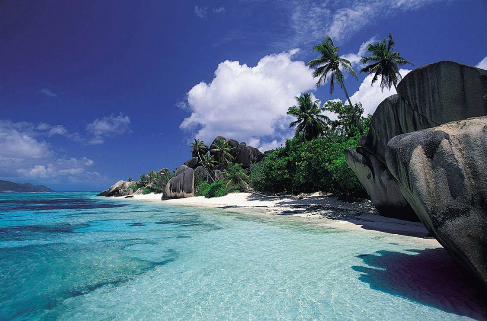
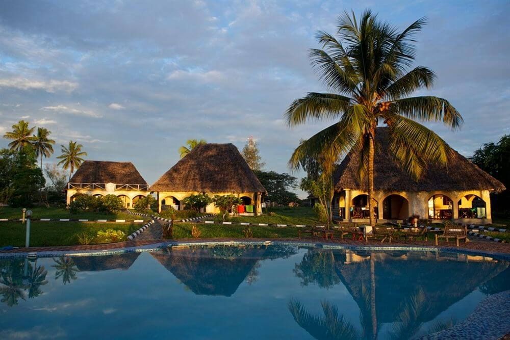

Tropical destinations
To start off there are very may tropical destinations that you could go to but why don't we start with our home-turf or somewhere close to home.- Lamu Archipelago,Kenya
Lamu is a collection of islands located off the coast of Kenya north of Mombasa .The beaches of Shela Village on the main island offer the quintessential Indian Ocean ingredients: powdery white sands, excellent snorkeling, and clear blue waters. Founded by the Swahili people nearly 700 years ago, Lamu Town is a UNESCO World Heritage Site and one of Kenya's oldest settlements. Its quiet, narrow streets are fascinating to explore and the fact that there are no cars available for visitors on the island just enhances the sense of stepping back in time.

- Anse Source D'Argent ,Seychelles
A bit further from home is the Anse Source D'Argent in Seychelles. The Seychelles archipelago has long been one of the world's most romantic destinations and its beaches feature frequently in global Top 10 lists. One of the island nation's most famous beaches is Anse Source D’Argent, located on the island of La Digue. This stretch of pure white sand is perhaps the archetypal paradise beach, with dramatic boulders, shallow turquoise waters and gently curving palm trees. It's a great place to soak up the sunshine or go snorkeling, although its perfect beauty also makes it a popular stop for visiting day-trippers.
- Mnemba Island ,Tanzania
Located off the north coast of Tanzania, Mnemba is a private Indian Ocean island and part of the historic Zanzibar Archipelago. The island offers the best snorkeling and scuba diving in Zanzibar, and there are ample opportunities for whale watching, swimming with dolphins and whale shark encounters in the island's clear, warm waters. It's also the perfect destination for a romantic honeymoon or anniversary celebration.
- Cozumel , Mexico
Cozumel beaches are free all year long, so you can spend entire days enjoying the sun and spend almost nothing. If you prefer the comfort of a pool, you can get a day pass at one of the luxury local resorts - which will allow you full use of their pool and sun chairs without the cost of sleeping there.
The Arrecifes de Cozumel National Park is the world's second-largest coral reef system, perfect for some diving at very affordable prices.
For a quick bite or snacks on the go, nothing beats a local mercado - little markets that appear unannounced in plazas, where you can get not only great souvenirs and local art but also traditional fare, such as tamales and quesadillas, for very little money.
- Costa Rica
Costa Rica is not necessarily always a cheap tropical getaway, but arriving at the right time of year will definitely save a lot of money. From May to mid-December, Costa Rica experiences what's known as the "green season" - lots of rain, thick cloud forests on green mountainsides, and budget-friendly surf breaks at a time when the big crowds mostly stay away. Don't let the rain scare you, though - it's still warm, and you'll get plenty of sunny days to enjoy the beach.